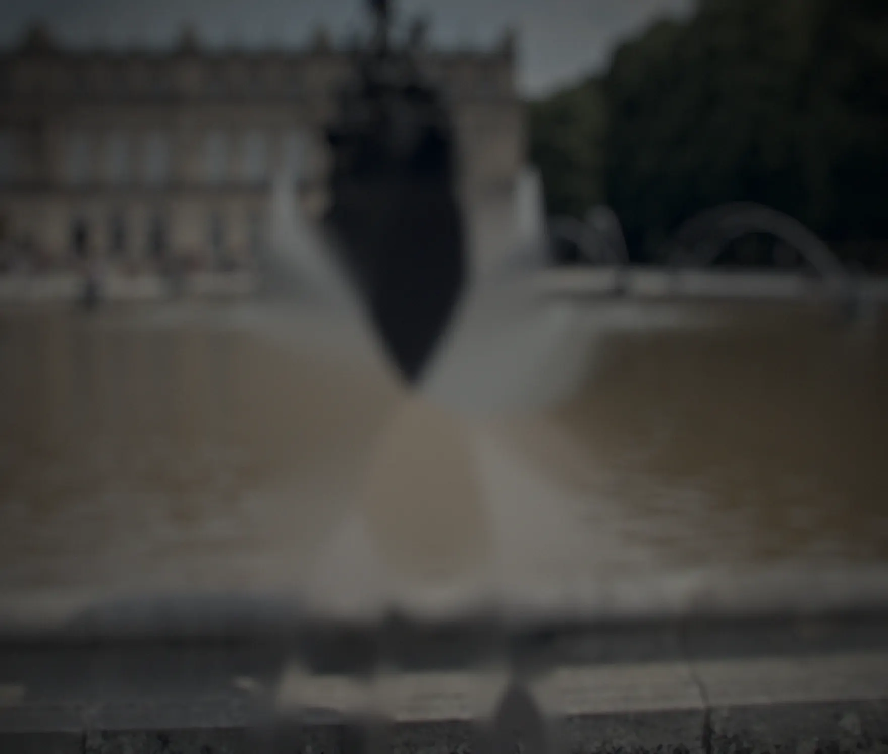

Über michAbout me
Hinter DepecheMartin steckt ein Bastler aus Österreich, der gern Dinge baut, automatisiert und dabei Synthesizer hört – mit der besten Co-Pilotin an der Seite.Behind DepecheMartin is a maker from Austria who likes to build and automate things while listening to synthesizers – with the best co-pilot by his side.
- KameraCamera
- Canon EOS 77D
- BrennweiteFocal
- 20 mm
- BelichtungExposure
- 1/200 s · ISO 100
- EntwicklungProcessing
- RAW → DM-Grade

 Operator · DM
Co-PilotinCo-pilot
Operator · DM
Co-PilotinCo-pilot
Platzhalter: Ein paar Sätze über dich – wie du zum 3D-Druck gekommen bist, was dich am Smart Home reizt, seit wann du Depeche Mode hörst.Placeholder: a few sentences about you – how you got into 3D printing, what draws you to the smart home, since when you've been listening to Depeche Mode.
Diese Seite ist mein öffentliches Notizbuch: Was ich hier aufschreibe, muss ich nicht noch einmal herausfinden.This site is my public notebook: whatever I write down here, I don't have to figure out again.
- NameName
- DepecheMartin
- BasisBase
- ÖsterreichAustria
- WerkzeugeTools
- K1 Max · Cameo 5 α
- Smart Home
- Home Assistant
- MusikMusic
- Dark Wave · Synth-Pop
Schreib mir.Get in touch.
Fragen zu einem Projekt oder einer Datei? Am einfachsten per E-Mail.Questions about a project or a file? Email works best.